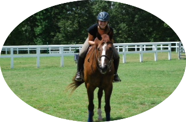

Meghan grew up riding in Pittsburgh, PA. She has been riding since the age of 4 and has competed across the country. She has been an active participant on the equestrian team since her sophomore year. She is a biology major at MIT and does research in the Vander Heiden Lab and is a member of the Alpha Phi sorority. She also enjoys yoga.
Morgan is a sophomore at MIT and is pursuing a degree in Course 1. She grew up in Charlotte, North Carolina and has been riding since age 10. Morgan showed in the hunters throughout high school with her horse You Little Rascal.
Vivian is a senior at MIT from sunny Southern California. She is studying Biology (Course 7) and plans to go into medical school after graduation. She started riding at around age 10 in both English and Western and rode intermittently until she was about 13. She resumed riding at MIT as a sophomore when she discovered the Equestrian Team. Although she is still a beginner, she hopes to continue learning and improving on her riding to a more advanced level. Other than riding, Vivian also enjoys photography and music.
We ride at Spring Time Farm in Boxford, MA. It is about a 45-minute drive from MIT.
Spring Time Farm is located on about 20 acres of land including a 100 X 225 outdoor ring and a 75 X 200 indoor ring.
To join our weekly rides, please email us at equestrian@mit.edu!
The Equestrian Team provides opportunities for MIT affiliates to ride during the school year. The team has weekly lessons at a local barn and participates in intercollegiate shows. Send an email to the club if you'd like to learn more!
